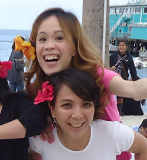
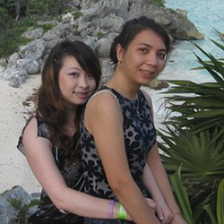
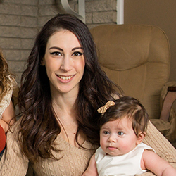
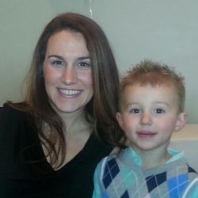
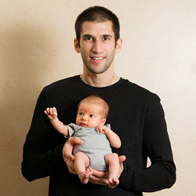
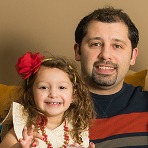
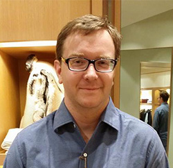
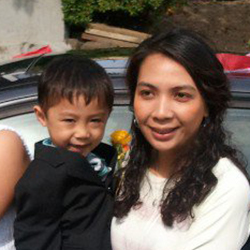
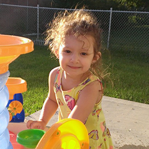
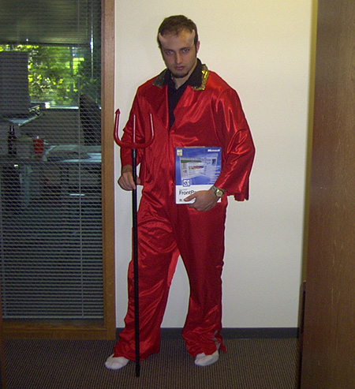

It is a great pleasure to introduce our close friends and family joining us at the wedding party.
Catherine - Bridesmaid
I've known Catherine for seven years. We met at Microsoft working in the same department. We are also neighbors. Because of how close we are, friendship started to develop upon sharing eggs, salt and pepper when we run out, there are days when I come home to find lunch in front of my doorstep. Besides food, we love watching and following soccer, the World Cup, and play musical instruments together.
Sophia - Bridesmaid
I've known Sophia for six years. We met each other through Catherine. We quickly became close friends after that. We love traveling, playing video games, and enjoy living together. Best memories are when we were in Cancun. It was so fun and relaxing, we decided to go back to Cancun and repeated the same trip. For some reason, we always got ourselves stuck in dangerous situations as if we didn't learn from the first trip.
Mary Ann - Bridesmaid
Mary Ann is the mother of two beautiful girls (Evalynn and Zola) and married to groomsman Zoran. She went to beauty school to become a cosmotologist and currently runs a hair salon. She is the youngest sibling in the family and is the sister of Peter and Ben Spada.
Anita - Bridesmaid
Anita has been Peter's cousin since she was born. In recently uncovered home movies it was discovered that Peter taught Anita how to walk. Now she has three children (one girl and two boys) and still knows how to walk really well!
Ben - Groomsman
My brother and I grew up doing everything together, being he's two years younger than me. We had the same best friends growing up, played video games, played sports, etc. When I'm visiting Michigan it's always great when he brings his son Anthony around to play.
Z - Groomsman
Zoran is my hockey playing brother-in-law. I stood up at his wedding when he married my sister, Mary Ann. Whenever I'm bored in Michigan I can go over their house to watch movies, or Z and I can go watch a Tigers game.
Dan - Groomsman
Dan was one of my first friends right after moving to Redmond. His office was next door to mine at work and that continued to be the case for 13 years, despite many office moves. I think the managers just knew not to move us apart when assigning offices. Dan and I used to avoid celebrating Thanksgiving by going snowboarding in Canada. Those trips to Whistler were quite memorable.
Joe - Groomsman
I've known Joe since since he was just a little baby intern at Microsoft. I've also had an office near Joe's at work for many many years. For all those years we've been on the same bowling team, competing against each other as well as the other team. I remember playing Rock Band with Joe and going through the "endlist setlist" which is a day-long exercise is playing fake instruments.
Tommy - Ring Bearer
This is Tommy, he is Lila's youngest nephew. Tommy will be the ring bearer, that way we don't have to worry where the rings are. He is seven years old, he likes Power Rangers and his favorite video game is Jet Pack Joyride.
Evalynn - Flower Girl

Evalynn is Peter's three year old niece. She will be throwing flower petals around and she doesn't
even have to pick them up. The ceremony guests will have to clean up afterwards... (just kidding)
Evalynn is a master Play-Doh artist, so if you want some stuck in your carpet, ask her to come over!
Saan - DJ
Saan, our DJ and MC for the night. He wants two Ferraris and a Prius for commuting. We ordered three hot wheels on Amazon with two day shipping.
Phil - Officiator
Phil will officiate the marriage with his one-day pass that gives him the power to declare anybody husband and wife. Will he use his power for good? Or for ultimate evil? We have to be nice to him.